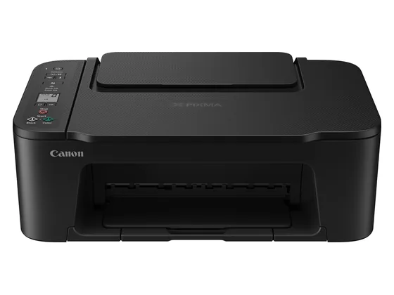
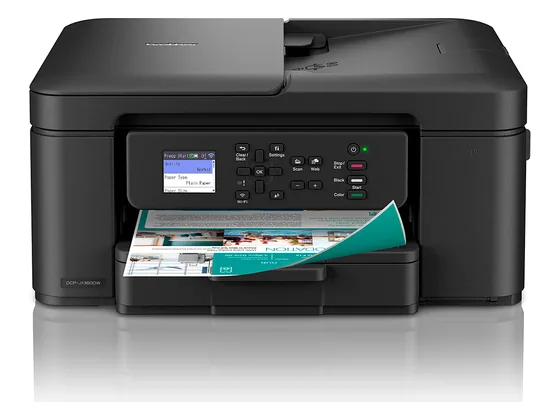
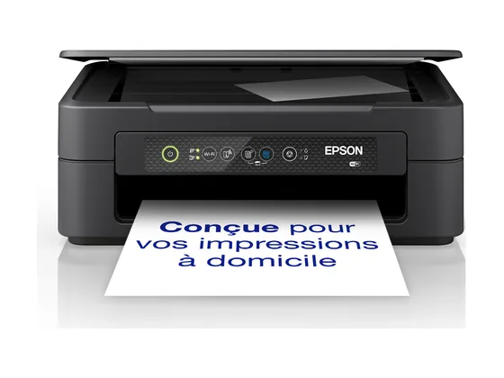
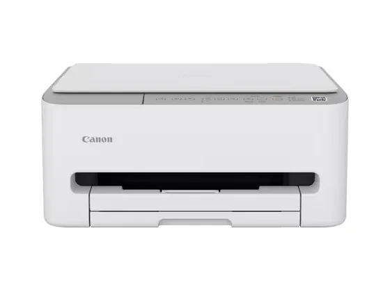

Canon PIXMA TS3750i : avis, tests et prix
Le verdict en une phrase. Une multifonction d'entrée de gamme compacte, éligible à l'abonnement d'encre de Canon, testée par Test-Achats et Which?.
N° 6 sur 10 dans le top 10 Imprimantes petit prix.

Pour qui ?
Vous voulez une petite imprimante d'appoint pour la maison.
Vous imprimez beaucoup.
Le consensus de la presse
Les tests recensés ne donnent pas de note chiffrée : nous renvoyons vers les articles plutôt que d'inventer une note.
Où l'acheter
La configuration peut différer d'un marchand à l'autre : vérifiez la fiche avant d'acheter. Seuls les liens Amazon sont affiliés à ce jour ; les autres sont de simples liens directs. Aucun n'influence les notes ni le classement.
Tous les tests recensés
Chaque ligne renvoie vers le test d'origine. Les notes sont converties sur 10 ; « test » signale un article sans note chiffrée. Notre méthode.
- Test-Achatstest
- Which?test
Les alternatives pour le même usage
Tout le top 10 →
Brother DCP-J1360DWUne multifonction jet d'encre compacte de Brother avec recto-verso, testée par Test-Achats et Que Choisir. Délai de livraison de quelques semaines. N° 5 · La moins chère
Epson Expression Home XP-2200L'imprimante multifonction la plus vendue pour presque rien : compacte et suffisante pour quelques pages par mois. Les cartouches coûtent vite plus cher que l'imprimante. N° 7 · L'entrée de gamme
Canon PIXMA TS4151iUne multifonction compacte d'entrée de gamme, testée par Test-Achats et (dans sa version TS4150i) par Que Choisir.Questions fréquentes
Que pense la presse de l'imprimante Canon PIXMA TS3750i ?
2 tests presse recensés, sans note chiffrée. Une multifonction d'entrée de gamme compacte, éligible à l'abonnement d'encre de Canon, testée par Test-Achats et Which?.
Quels sont les points faibles relevés par les tests ?
Cartouches chères à l'usage ; Pas de recto-verso automatique.
À qui s'adresse le modèle Canon PIXMA TS3750i ?
Vous voulez une petite imprimante d'appoint pour la maison. À éviter si : vous imprimez beaucoup.
Où l'acheter, et à quel prix ?
Comptez environ 40 € (prix indicatif constaté en octobre 2026). Nous l'avons trouvé en vente chez Amazon. Les prix changent vite et la configuration peut différer d'un marchand à l'autre : seul le prix affiché par le marchand fait foi.